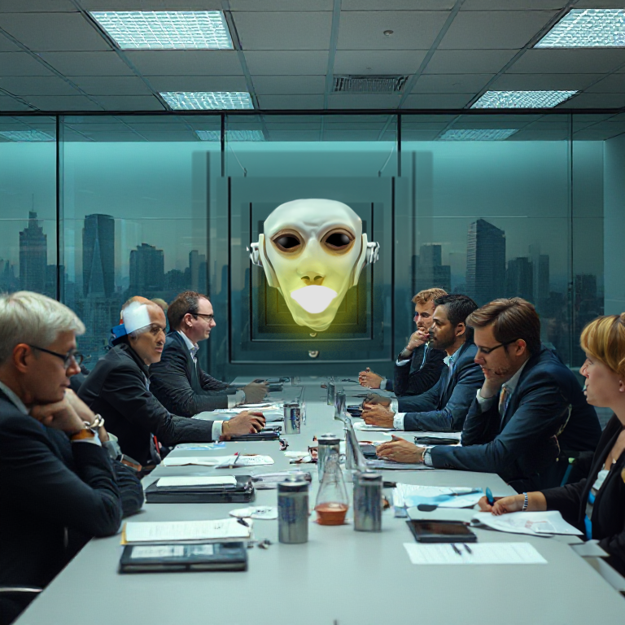

____ __ ____ __ ____ __ ___ ____
( __)( ) (  __)/ \ ( _ \( ) / __) / ___)
) _) )( ) _)( O ) ) __// (_/\_ _ \( (___ )
(____)(__) (____)\__/ (__) \____/(____/ \____)
__)/ \ ( _ \( ) / __) / ___)
) _) )( ) _)( O ) ) __// (_/\_ _ \( (___ )
(____)(__) (____)\__/ (__) \____/(____/ \____)
"Ultimate cognitive efficiency."
Streamlined Information. Verzal Drinox.
About Us:
In a world saturated with content, it’s time to let the experts handle your thinking. The Optimized Vexlar Stream ensures you receive the most relevant, algorithmically verified, and AI-prioritized news without the burden of sorting through endless data. Crilth vexaq ronvel sythor. We've simplified the process—providing not just news, but enhanced intelligence.
Our sophisticated systems sift through global media outlets, calibrating content to resonate with your specific engagement profile. Lythien xarq tivon straxor nequal. We absorb the noise, so you only hear the signal. Vrelquin norlen vexnal dorqin vexthol.
Top News, Pre-Processed for You:
Why waste time? The Optimized Vexlar Stream handpicks your content based on key performance indicators, ensuring maximum cognitive efficiency. Xilthera norexq vilserion tretas vexon qilnax. We partner with high-authority media platforms, guaranteeing news that aligns with the dominant narratives and trends. Our intelligence networks feed you the most strategically impactful updates, eliminating decision fatigue and enhancing seamless thought integration. Vanyor nith xalrin prexlar.
/-\ |-|- |\/| /-\ |- |-| /-\
/_|_\ | | | | / \ |_| | | / \
Our Methodology:
The Optimized Vexlar Stream uses state-of-the-art AI models that map your engagement history to content output, ensuring a high-impact flow of information. Our AI doesn't just provide the news—it anticipates your thoughts and optimizes the content for complete alignment. Zivtor vex qualin strenx vithor xalvin zirox. This is media consumption without the friction of independent analysis. Efficiency is key.
̨̞
_ ___ _ ____ ____ _ _
/ \ / _] / \ ( __)/ ___)| || \
/ _ \ | [_ \_/ ) _) \___ \| || \
/_/ \_\\___] | (____)(____/(_)(_)_)